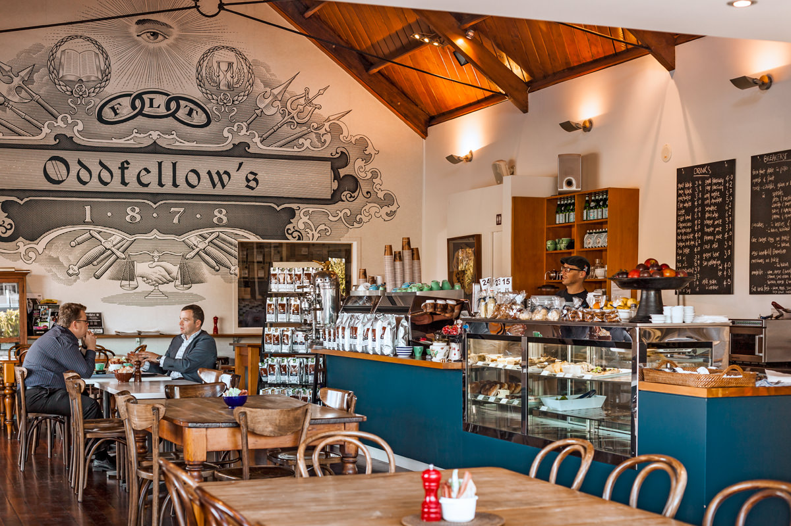

<ion-header>
  <ion-navbar color="dark" [hideBackButton]="false">
    <ion-buttons align-self-start>
      <button ion-button menuToggle>
        <ion-icon name="menu"></ion-icon>
      </button>
    </ion-buttons>
    <ion-title align-title="center">Welkom, {{username}}!</ion-title>
    <ion-buttons end>
      <button ion-button (click)="logout()">
        <ion-icon name="log-out"></ion-icon>
      </button>
    </ion-buttons>
  </ion-navbar>
</ion-header>

<ion-content class="home" padding>
  <!--<h3>Welcome inside, {{username}}!</h3>
  Your Email is: {{email}}-->
  <ion-title>Afgelopen Sessie's</ion-title>
    <ion-card>
    
    <div class="card-title">Bezoek Bars</div>
    <div class="card-subtitle">Thema: Welke bars we bezoeken</div>
  </ion-card>

  <ion-fab right bottom>
    <button ion-fab color="light" (click)="openMondal()"><ion-icon name="ios-chatbubbles"></ion-icon></button>
    <!--Moet nog aangepast worden aan de sessie.-->
  </ion-fab>
</ion-content>

<ion-footer color="dark">
  <ion-navbar color="dark">
    <ion-buttons>
      <div text-center>
        <button ion-button (click)="GoToSessionActive()">Actieve Sessie's</button>
      </div>
    </ion-buttons>
  </ion-navbar>
</ion-footer>


